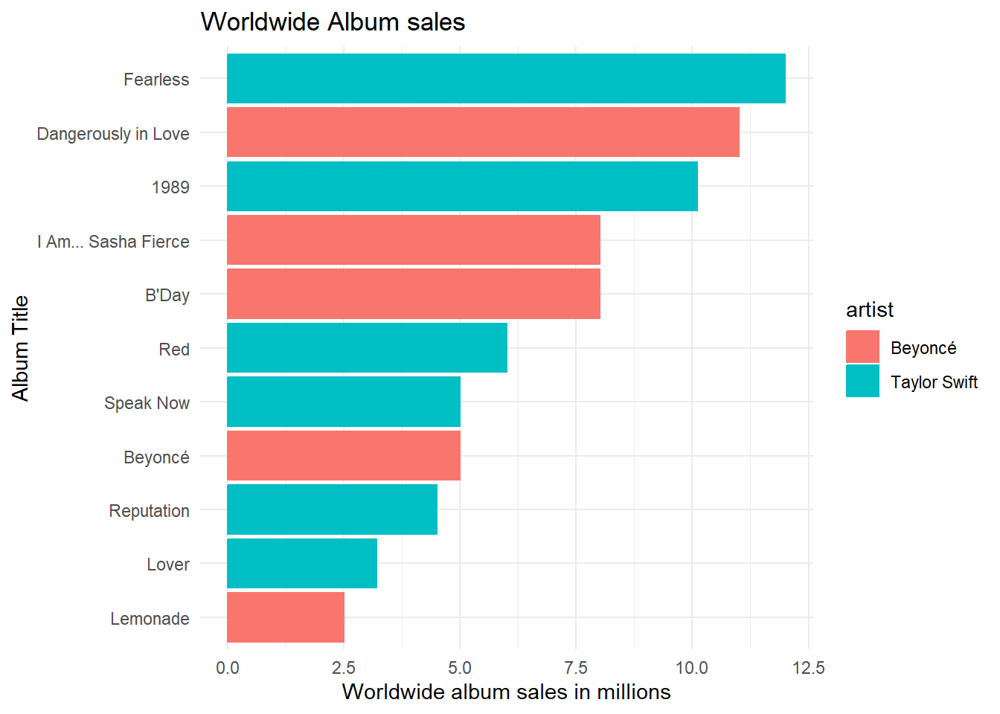
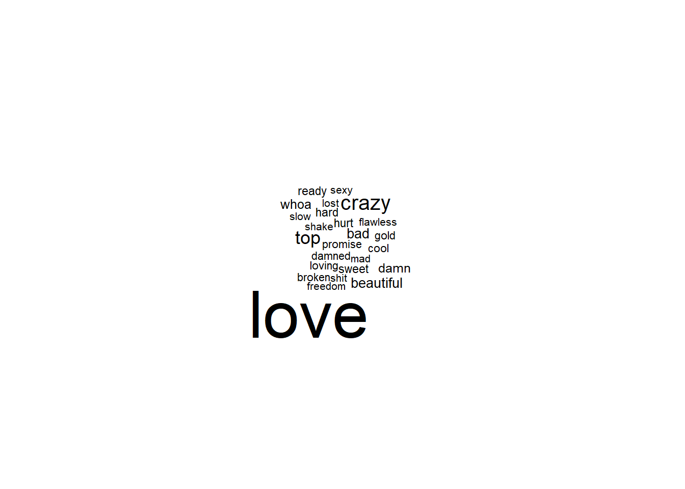
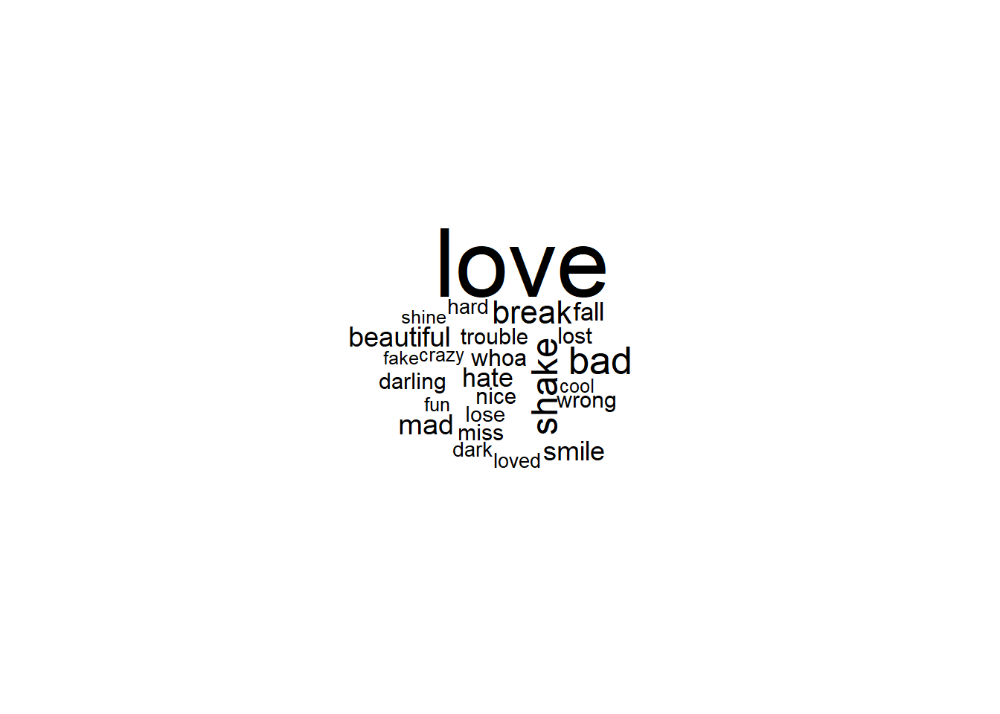

library(lubridate)
library(tidyverse)Project 3
Exploring album sales and sentiment of lyrics from Beyoncé and Taylor Swift
Part 1: Explore album sales
In this section, the goal is to explore the sales of studio albums from Beyoncé and Taylor Swift.
Notes
- In each of the subsections below that ask you to create a plot, you must create a title, subtitle, x-axis label, and y-axis label with units where applicable. For example, if your axis says “sales” as an axis label, change it to “sales (in millions)”.
Part 1A
In this section, we will do some data wrangling.
- Use
lubridateto create a column calledreleasedthat is aDateclass. However, to be able to do this, you first need to usestringrto search for pattern that matches things like this “(US)[51]” in a string like this “September 1, 2006 (US)[51]” and removes them. (Note: to get full credit, you must create the regular expression).
sales<-sales %>% mutate(released = str_replace_all(released,"(UK)"," "))
sales<-sales %>% mutate(released = str_replace_all(released,"(US)"," "))
sales<-sales %>% mutate(released = str_replace_all(released,"\\("," "))
sales<-sales %>% mutate(released = str_replace_all(released,"\\)"," "))
sales<-sales %>% mutate(released = str_replace_all(released,"\\[51]"," "))
sales<-sales %>% mutate(released = str_replace_all(released,"\\[39]"," "))sales <- sales %>% mutate(released = mdy(released))- Use
forcatsto create a factor calledcountry(Note: you may need to collapse some factor levels).
sales$country <- fct_collapse(sales$country,
us = c("US"),
uk = c("UK"),
world = c("WW", "World"))sales$country <- factor(sales$country,
levels = setdiff(levels(sales$country),
c("FRA","AUS","JPN","CAN","FR")))
sales$country <- fct_drop(sales$country)- Transform the
salesinto a unit that is album sales in millions of dollars.
sales <- sales %>% mutate(sales = sales / 1000000)- Keep only album sales from the UK, the US or the World.
sales<-sales[!is.na(sales$country),]- Auto print your final wrangled tibble data frame.
print(as_tibble(sales))# A tibble: 36 × 8
artist title country sales released re_release label formats
<chr> <chr> <fct> <dbl> <date> <chr> <chr> <chr>
1 Taylor Swift Taylor Swift us 5.72 2006-10-24 March 18, … Big … CD, CD…
2 Taylor Swift Fearless world 12 2008-11-11 October 27… Big … CD, CD…
3 Taylor Swift Fearless us 7.18 2008-11-11 October 27… Big … CD, CD…
4 Taylor Swift Fearless uk 0.609 2008-11-11 October 27… Big … CD, CD…
5 Taylor Swift Speak Now world 5 2010-10-25 <NA> Big … CD, CD…
6 Taylor Swift Speak Now us 4.69 2010-10-25 <NA> Big … CD, CD…
7 Taylor Swift Speak Now uk 0.169 2010-10-25 <NA> Big … CD, CD…
8 Taylor Swift Red world 6 2012-10-22 <NA> Big … CD, CD…
9 Taylor Swift Red us 4.46 2012-10-22 <NA> Big … CD, CD…
10 Taylor Swift Red uk 0.693 2012-10-22 <NA> Big … CD, CD…
# ℹ 26 more rowsPart 1B
In this section, we will do some more data wrangling followed by summarization using wrangled data from Part 1A.
- Keep only album sales from the US.
sales_us<-salessales_us$country <- factor(sales_us$country,
levels = setdiff(levels(sales_us$country),
c("world","uk")))
sales_us$country <- fct_drop(sales_us$country)
sales_us<-sales_us[!is.na(sales_us$country),]- Create a new column called
years_since_releasecorresponding to the number of years since the release of each album from Beyoncé and Taylor Swift. This should be a whole number and you should round down to “14” if you get a non-whole number like “14.12” years. (Hint: you may find theinterval()function fromlubridatehelpful here, but this not the only way to do this.)
sales_us <- sales_us %>%
mutate(years_since_release = round(time_length(interval(released, today()), unit = "years")))- Calculate the most recent, oldest, and the median years since albums were released for both Beyoncé and Taylor Swift.
print("Beyoncé album, most recent US release (years)")[1] "Beyoncé album, most recent US release (years)"result <- sales_us %>%
filter(artist == "Beyoncé") %>%
summarise(min_years_since_release = min(years_since_release, na.rm = TRUE))
print(result)# A tibble: 1 × 1
min_years_since_release
<dbl>
1 8print("Beyoncé album, oldest US release (years)")[1] "Beyoncé album, oldest US release (years)"result <- sales_us %>%
filter(artist == "Beyoncé") %>%
summarise(max_years_since_release = max(years_since_release, na.rm = TRUE))
print(result)# A tibble: 1 × 1
max_years_since_release
<dbl>
1 20print("Beyoncé albums, Median age US release (years)")[1] "Beyoncé albums, Median age US release (years)"result <- sales_us %>%
filter(artist == "Beyoncé") %>%
summarise(median_years_since_release = median(years_since_release, na.rm = TRUE))
print(result)# A tibble: 1 × 1
median_years_since_release
<dbl>
1 13.5print("Taylor Swift album, most recent US release (years)")[1] "Taylor Swift album, most recent US release (years)"result <- sales_us %>%
filter(artist == "Taylor Swift") %>%
summarise(min_years_since_release = min(years_since_release, na.rm = TRUE))
print(result)# A tibble: 1 × 1
min_years_since_release
<dbl>
1 4print("Taylor Swift album, oldest US release (years)")[1] "Taylor Swift album, oldest US release (years)"result <- sales_us %>%
filter(artist == "Taylor Swift") %>%
summarise(max_years_since_release = max(years_since_release, na.rm = TRUE))
print(result)# A tibble: 1 × 1
max_years_since_release
<dbl>
1 17print("Taylor Swift albums, Median age US release (years)")[1] "Taylor Swift albums, Median age US release (years)"result <- sales_us %>%
filter(artist == "Taylor Swift") %>%
summarise(median_years_since_release = median(years_since_release, na.rm = TRUE))
print(result)# A tibble: 1 × 1
median_years_since_release
<dbl>
1 11Part 1C
Using the wrangled data from Part 1A:
- Calculate the total album sales for each artist and for each
country(only sales from the UK, US, and World).- Note: assume that the World sales do not include the UK and US ones.
print("Taylor Swift sales, by country (millions of albums sold)")[1] "Taylor Swift sales, by country (millions of albums sold)"result <- sales %>%
filter(artist == "Taylor Swift") %>%
group_by(country) %>%
summarise(total_sales = sum(sales, na.rm = TRUE))%>%
arrange(-total_sales)
print(result)# A tibble: 3 × 2
country total_sales
<fct> <dbl>
1 world 40.8
2 us 31.7
3 uk 3.32print("Beyoncé sales, by country (millions of albums sold)")[1] "Beyoncé sales, by country (millions of albums sold)"result <- sales %>%
filter(artist == "Beyoncé") %>%
group_by(country) %>%
summarise(total_sales = sum(sales, na.rm = TRUE))%>%
arrange(-total_sales)
print(result)# A tibble: 3 × 2
country total_sales
<fct> <dbl>
1 world 34.5
2 us 17.7
3 uk 5.24- Using the total album sales, create a percent stacked barchart using
ggplot2of the percentage of sales of studio albums (in millions) along the y-axis for the two artists along the x-axis colored by thecountry.
ggplot(sales, aes(fill=country, y=sales, x=artist)) +
geom_bar(position="fill", stat="identity") +
labs(
x = "Artist Name",
y = "% of sales in millions of albums sold",
title = "Album sales, as percentage of total albums sold, sorted by country"
) +
theme_minimal()Part 1D
Using the wrangled data from Part 1A, use ggplot2 to create a bar plot for the sales of studio albums (in millions) along the x-axis for each of the album titles along the y-axis.
Note:
- You only need to consider the global World sales (you can ignore US and UK sales for this part). Hint: how would you abbreviate WorldWide?
sales_world<-salessales_world$country <- factor(sales_world$country,
levels = setdiff(levels(sales_world$country),
c("us","uk")))
sales_world$country <- fct_drop(sales_world$country)
sales_world<-sales_world[!is.na(sales_world$country),]The title of the album must be clearly readable along the y-axis.
Each bar should be colored by which artist made that album.
The bars should be ordered from albums with the most sales (top) to the least sales (bottom) (Note: you must use functions from
forcatsfor this step).
sales_world %>%
ggplot(aes(y = reorder(title, sales, mean), x = sales, fill= artist, colour = artist)) +
geom_col() +
scale_color_hue(direction = 1) +
labs(
x = "Worldwide album sales in millions",
y = "Album Title",
title = "Worldwide Album sales"
) +
theme_minimal()
Part 1E
Using the wrangled data from Part 1A, use ggplot2 to create a scatter plot of sales of studio albums (in millions) along the y-axis by the released date for each album along the x-axis.
Note:
- The points should be colored by the artist.
- There should be three scatter plots (one for UK, US and world sales) faceted by rows.
ggplot(sales) +
aes(x = released, y = sales, fill = artist, colour = artist) +
geom_point(shape = 21, size = 1.5, colour = "#112446") +
theme_minimal() +
facet_wrap(vars(country),ncol=1,dir="v")+
labs(
x = "Year of album release",
y = "Sales in individual market (millions)",
title = "Temporal relationship of album sales, UK, US, Worldwide")Part 2: Exploring sentiment of lyrics
In Part 2, we will explore the lyrics in the b_lyrics and ts_lyrics datasets.
Part 2A
Using ts_lyrics, create a new column called line with one line containing the character string for each line of Taylor Swift’s songs.
ts_lyrics_split <- ts_lyrics %>%
mutate(line = str_split(ts_lyrics$Lyrics, "\n")) %>%
unnest(line)- How many lines in Taylor Swift’s lyrics contain the word “hello”? For full credit, show all the rows in
ts_lyricsthat have “hello” in thelinecolumn and report how many rows there are in total.
print("Number of times the word 'Hello' appears on a line-by-line basis")[1] "Number of times the word 'Hello' appears on a line-by-line basis"hello_number_ts <- ts_lyrics_split %>%
filter(str_detect(line, regex("hello", ignore_case = TRUE))) %>%
nrow()
print(hello_number_ts)[1] 6print("Lines including the word 'Hello'in Taylor Swift songs")[1] "Lines including the word 'Hello'in Taylor Swift songs"hello_lines_ts <- ts_lyrics_split %>%
filter(str_detect(line, regex("hello", ignore_case = TRUE))) %>%
select(Artist, Album, Title,line)
print(hello_lines_ts)# A tibble: 6 × 4
Artist Album Title line
<chr> <chr> <chr> <chr>
1 Taylor Swift Fearless Love Story "And say, \"Hello\""
2 Taylor Swift Red I Almost Do "That I can't say \"Hello\" to y…
3 Taylor Swift Red Everything Has Changed "'Cause all I know is we said he…
4 Taylor Swift Red Everything Has Changed "'Cause all I know is we said he…
5 Taylor Swift Red Everything Has Changed "All I know is we said hello"
6 Taylor Swift Red Everything Has Changed "All I know is we said hello" - How many lines in Taylor Swift’s lyrics contain the word “goodbye”? For full credit, show all the rows in
ts_lyricsthat have “goodbye” in thelinecolumn and report how many rows there are in total.
print("Number of times the word 'Goodbye' appears on a line-by-line basis")[1] "Number of times the word 'Goodbye' appears on a line-by-line basis"goodbye_number_ts <- ts_lyrics_split %>%
filter(str_detect(line, regex("goodbye", ignore_case = TRUE))) %>%
nrow()
print(goodbye_number_ts)[1] 12print("Lines including the word 'Goodbye'in Taylor Swift songs")[1] "Lines including the word 'Goodbye'in Taylor Swift songs"goodbye_lines_ts <- ts_lyrics_split %>%
filter(str_detect(line, regex("goodbye", ignore_case = TRUE))) %>%
select(Artist, Album, Title,line)
print(goodbye_lines_ts)# A tibble: 12 × 4
Artist Album Title line
<chr> <chr> <chr> <chr>
1 Taylor Swift Taylor Swift Tied Together With A Smile "Goodbye, baby"
2 Taylor Swift Speak Now Mine "Braced myself for the …
3 Taylor Swift Speak Now Back to December "You gave me all your l…
4 Taylor Swift Speak Now Long Live "And force us into a go…
5 Taylor Swift Red I Almost Do "And risk another goodb…
6 Taylor Swift Red Come Back Be Here "Stumbled through the l…
7 Taylor Swift 1989 All You Had to Do Was Stay "But people like me are…
8 Taylor Swift reputation Getaway Car "Said goodbye in "
9 Taylor Swift reputation Getaway Car "Said goodbye in "
10 Taylor Swift Lover Death By A Thousand Cuts "Saying goodbye is deat…
11 Taylor Swift Lover Death By A Thousand Cuts "'Cause saying goodbye …
12 Taylor Swift Lover Daylight "I'll tell you truth, b…Part 2B
Repeat the same analysis for b_lyrics as described in Part 2A.
- How many lines in Beyoncé’s lyrics contain the word “hello”? For full credit, show all the rows in
b_lyricsthat have “hello” in thelinecolumn and report how many rows there are in total.
print("Number of times the word 'Hello' appears on a line-by-line basis in Beyoncé songs")[1] "Number of times the word 'Hello' appears on a line-by-line basis in Beyoncé songs"hello_number_b <- b_lyrics %>%
filter(str_detect(line, regex("hello", ignore_case = TRUE))) %>%
nrow()
print(hello_number_b)[1] 91print("Lines including the word 'Hello'in Beyoncé songs")[1] "Lines including the word 'Hello'in Beyoncé songs"hello_lines_b <- b_lyrics %>%
filter(str_detect(line, regex("hello", ignore_case = TRUE))) %>%
select(artist_name,song_name, line)
print(hello_lines_b)# A tibble: 91 × 3
artist_name song_name line
<chr> <chr> <chr>
1 Beyoncé "Dreamgirls Medley (The Beyonce Experience Live)" Hell…
2 Beyoncé "Fingertips/Master Blaster (Jammin')/Higher Ground [Live a… Hell…
3 Beyoncé "FREEDOM (2016 BET Awards) (Ft. Kendrick Lamar)" Fell…
4 Beyoncé "Hello" You …
5 Beyoncé "Hello" Hell…
6 Beyoncé "Hello" Hell…
7 Beyoncé "Hello" You …
8 Beyoncé "Hello" Hell…
9 Beyoncé "Hello" Hell…
10 Beyoncé "Hello" 'Cau…
# ℹ 81 more rows- How many lines in Beyoncé’s lyrics contain the word “goodbye”? For full credit, show all the rows in
b_lyricsthat have “goodbye” in thelinecolumn and report how many rows there are in total.
print("Number of times the word 'Goodbye' appears on a line-by-line basis in Beyoncé songs")[1] "Number of times the word 'Goodbye' appears on a line-by-line basis in Beyoncé songs"goodbye_number_b <- b_lyrics %>%
filter(str_detect(line, regex("goodbye", ignore_case = TRUE))) %>%
nrow()
print(goodbye_number_b)[1] 12print("Lines including the word 'Goodbye'in Beyoncé songs")[1] "Lines including the word 'Goodbye'in Beyoncé songs"goodbye_lines_b <- b_lyrics %>%
filter(str_detect(line, regex("goodbye", ignore_case = TRUE))) %>%
select(artist_name,song_name, line)
print(goodbye_lines_b)# A tibble: 12 × 3
artist_name song_name line
<chr> <chr> <chr>
1 Beyoncé Back to Black (Ft. André 3000) We only said goodbye w…
2 Beyoncé Back to Black (Ft. André 3000) We only said goodbye w…
3 Beyoncé Back to Black (Ft. André 3000) We only said goodbye w…
4 Beyoncé Best Thing I Never Had Thank God, I found the…
5 Beyoncé Best Thing I Never Had (Lars B Remix) Thank God, I found the…
6 Beyoncé Best Thing I Never Had [Original Version] Thank God, I found the…
7 Beyoncé Gift from Virgo It's so hard to say go…
8 Beyoncé Gift from Virgo I never want to say go…
9 Beyoncé Gift from Virgo I never, ever want to …
10 Beyoncé Hard To Say Goodbye We've got to say goodb…
11 Beyoncé Slow Love Don't have to say good…
12 Beyoncé Yes Somewhere between hi a…Part 2C
Using the b_lyrics dataset,
- Tokenize each lyrical line by words.
if(!require(tidytext)){
install.packages("tidytext",repos='http://cran.us.r-project.org')
library(tidytext)
}b_df<-tibble(
line = seq_along(b_lyrics$line),
text = b_lyrics$line
)b_tokens <-
unnest_tokens(b_df,
output = word,
input = text,
token = "words"
)
head(b_tokens)# A tibble: 6 × 2
line word
<int> <chr>
1 1 if
2 1 i
3 1 ain't
4 1 got
5 1 nothing
6 1 i - Remove the “stopwords”.
b_no_stop <-
b_tokens %>%
anti_join(stop_words)- Calculate the total number for each word in the lyrics.
b_count<-b_no_stop %>%
count(word, sort = TRUE)- Using the “bing” sentiment lexicon, add a column to the summarized data frame adding the “bing” sentiment lexicon.
b_count <-
b_count %>%
inner_join(get_sentiments("bing"))Sort the rows from most frequent to least frequent words.
Only keep the top 25 most frequent words.
b_count<-b_count %>%
slice(1:25)- Auto print the wrangled tibble data frame.
print(b_count)# A tibble: 25 × 3
word n sentiment
<chr> <int> <chr>
1 love 1362 positive
2 crazy 308 negative
3 top 241 positive
4 bad 132 negative
5 beautiful 131 positive
6 whoa 121 positive
7 damn 106 negative
8 hurt 90 negative
9 hard 87 negative
10 ready 85 positive
# ℹ 15 more rows- Use
ggplot2to create a bar plot with the top words on the y-axis and the frequency of each word on the x-axis. Color each bar by the sentiment of each word from the “bing” sentiment lexicon. Bars should be ordered from most frequent on the top to least frequent on the bottom of the plot.
b_count %>%
ggplot(aes(y = reorder(word, n, mean), x = n, fill= sentiment, colour = sentiment )) +
geom_col() +
scale_color_hue(direction = 1) +
labs(
x = "Frequency of word in lyrics",
y = "Individual words",
title = "Sentiment in Beyoncé lyrics"
) +
theme_minimal()- Create a word cloud of the top 25 most frequent words.
if(!require(wordcloud)){
install.packages("wordcloud",repos='http://cran.us.r-project.org')
library(wordcloud)
}if(!require(RColorBrewer)){
install.packages("RColorBrewer",repos='http://cran.us.r-project.org')
library(RColorBrewer)
}b_count %>%
with(wordcloud(word, n, max.words = 25))
Part 2D
Repeat the same analysis as above in Part 2C, but for ts_lyrics.
ts_df<-tibble(
line = seq_along(ts_lyrics$Lyrics),
text = ts_lyrics$Lyrics
)ts_tokens <-
unnest_tokens(ts_df,
output = word,
input = text,
token = "words"
)
head(ts_tokens)# A tibble: 6 × 2
line word
<int> <chr>
1 1 he
2 1 said
3 1 the
4 1 way
5 1 my
6 1 blue - Remove the “stopwords”.
ts_no_stop <-
ts_tokens %>%
anti_join(stop_words)- Calculate the total number for each word in the lyrics.
ts_count<-ts_no_stop %>%
count(word, sort = TRUE)- Using the “bing” sentiment lexicon, add a column to the summarized data frame adding the “bing” sentiment lexicon.
ts_count <-
ts_count %>%
inner_join(get_sentiments("bing"))Sort the rows from most frequent to least frequent words.
Only keep the top 25 most frequent words.
ts_count<-ts_count %>%
slice(1:25)- Auto print the wrangled tibble data frame.
print(ts_count)# A tibble: 25 × 3
word n sentiment
<chr> <int> <chr>
1 love 248 positive
2 bad 80 negative
3 shake 73 negative
4 break 59 negative
5 mad 48 negative
6 beautiful 46 positive
7 smile 45 positive
8 hate 44 negative
9 fall 43 negative
10 whoa 36 positive
# ℹ 15 more rows- Use
ggplot2to create a bar plot with the top words on the y-axis and the frequency of each word on the x-axis. Color each bar by the sentiment of each word from the “bing” sentiment lexicon. Bars should be ordered from most frequent on the top to least frequent on the bottom of the plot.
ts_count %>%
ggplot(aes(y = reorder(word, n, mean), x = n, fill= sentiment, colour = sentiment )) +
geom_col() +
scale_color_hue(direction = 1) +
labs(
x = "Frequency of word in lyrics",
y = "Individual words",
title = "Sentiment in Taylor Swift lyrics"
) +
theme_minimal()- Create a word cloud of the top 25 most frequent words.
ts_count %>%
with(wordcloud(word, n, max.words = 25))
Part 2E
Using the ts_lyrics dataset,
- Tokenize each lyrical line by words.
- Remove the “stopwords”.
- Calculate the total number for each word in the lyrics for each Album.
- Using the “afinn” sentiment lexicon, add a column to the summarized data frame adding the “afinn” sentiment lexicon.
- Calculate the average sentiment score for each Album.
if(!require(textdata)){
install.packages("textdata",repos='http://cran.us.r-project.org')
library(textdata)
}split_data<-split(ts_lyrics_split,ts_lyrics_split$Album, drop =FALSE)folklore
folklore_df<-tibble(
line = seq_along(split_data$folklore$line),
text = split_data$folklore$line
)folklore_tokens <-
unnest_tokens(folklore_df,
output = word,
input = text,
token = "words"
)folklore_no_stop <-
folklore_tokens %>%
anti_join(stop_words)folklore_count<-folklore_no_stop %>%
count(word, sort = TRUE)folklore_count <-
folklore_count %>%
inner_join(get_sentiments("afinn"))folklore_score <- sum(folklore_count$value * folklore_count$n) / nrow(folklore_count)
print("folklore's average sentiment score")[1] "folklore's average sentiment score"print(folklore_score)[1] -0.907563Fearless
Fearless_df<-tibble(
line = seq_along(split_data$Fearless$line),
text = split_data$Fearless$line
)Fearless_tokens <-
unnest_tokens(Fearless_df,
output = word,
input = text,
token = "words"
)Fearless_no_stop <-
Fearless_tokens %>%
anti_join(stop_words)Fearless_count<-Fearless_no_stop %>%
count(word, sort = TRUE)Fearless_count <-
Fearless_count %>%
inner_join(get_sentiments("afinn"))Fearless_score <- sum(Fearless_count$value * Fearless_count$n) / nrow(Fearless_count)
print("Fearless's average sentiment score")[1] "Fearless's average sentiment score"print(Fearless_score)[1] 1.2596151989
nineteen_df<-tibble(
line = seq_along(split_data$'1989'$line),
text = split_data$'1989'$line
)nineteen_tokens <-
unnest_tokens(nineteen_df,
output = word,
input = text,
token = "words"
)nineteen_no_stop <-
nineteen_tokens %>%
anti_join(stop_words)nineteen_count<-nineteen_no_stop %>%
count(word, sort = TRUE)nineteen_count <-
nineteen_count %>%
inner_join(get_sentiments("afinn"))nineteen_score <- sum(nineteen_count$value * nineteen_count$n) / nrow(nineteen_count)
print("1989's average sentiment score")[1] "1989's average sentiment score"print(nineteen_score)[1] -0.8811881Lover
Lover_df<-tibble(
line = seq_along(split_data$Lover$line),
text = split_data$Lover$line
)Lover_tokens <-
unnest_tokens(Lover_df,
output = word,
input = text,
token = "words"
)Lover_no_stop <-
Lover_tokens %>%
anti_join(stop_words)Lover_count<-Lover_no_stop %>%
count(word, sort = TRUE)Lover_count <-
Lover_count %>%
inner_join(get_sentiments("afinn"))Lover_score <- sum(Lover_count$value * Lover_count$n) / nrow(Lover_count)
print("Lover's average sentiment score")[1] "Lover's average sentiment score"print(Lover_score)[1] 0.3071429Red
Red_df<-tibble(
line = seq_along(split_data$Red$line),
text = split_data$Red$line
)Red_tokens <-
unnest_tokens(Red_df,
output = word,
input = text,
token = "words"
)Red_no_stop <-
Red_tokens %>%
anti_join(stop_words)Red_count<-Red_no_stop %>%
count(word, sort = TRUE)Red_count <-
Red_count %>%
inner_join(get_sentiments("afinn"))Red_score <- sum(Red_count$value * Red_count$n) / nrow(Red_count)
print("Red's average sentiment score")[1] "Red's average sentiment score"print(Red_score)[1] 0.8782609reputation
reputation_df<-tibble(
line = seq_along(split_data$reputation$line),
text = split_data$reputation$line
)reputation_tokens <-
unnest_tokens(reputation_df,
output = word,
input = text,
token = "words"
)reputation_no_stop <-
reputation_tokens %>%
anti_join(stop_words)reputation_count<-reputation_no_stop %>%
count(word, sort = TRUE)reputation_count <-
reputation_count %>%
inner_join(get_sentiments("afinn"))reputation_score <- sum(reputation_count$value * reputation_count$n) / nrow(reputation_count)
print("reputation's average sentiment score")[1] "reputation's average sentiment score"print(reputation_score)[1] 0.1747573Speak Now
speak_df<-tibble(
line = seq_along(split_data$'Speak Now'$line),
text = split_data$'Speak Now'$line
)speak_tokens <-
unnest_tokens(speak_df,
output = word,
input = text,
token = "words"
)speak_no_stop <-
speak_tokens %>%
anti_join(stop_words)speak_count<-speak_no_stop %>%
count(word, sort = TRUE)speak_count <-
speak_count %>%
inner_join(get_sentiments("afinn"))speak_score <- sum(speak_count$value * speak_count$n) / nrow(speak_count)
print("Speak Now's average sentiment score")[1] "Speak Now's average sentiment score"print(speak_score)[1] 0.05555556Taylor Swift
taylor_df<-tibble(
line = seq_along(split_data$'Taylor Swift'$line),
text = split_data$'Taylor Swift'$line
)taylor_tokens <-
unnest_tokens(taylor_df,
output = word,
input = text,
token = "words"
)taylor_no_stop <-
taylor_tokens %>%
anti_join(stop_words)taylor_count<-taylor_no_stop %>%
count(word, sort = TRUE)taylor_count <-
taylor_count %>%
inner_join(get_sentiments("afinn"))taylor_score <- sum(taylor_count$value * taylor_count$n) / nrow(taylor_count)
print("Taylor Swift's average sentiment score")[1] "Taylor Swift's average sentiment score"print(taylor_score)[1] 2.027397- Auto print the wrangled tibble data frame.
sentiment <- tibble(
title = c("Reputation", "Red", "1989", "Fearless", "folklore", "Taylor Swift", "Lover", "Speak Now"),
score = c(reputation_score, Red_score, nineteen_score, Fearless_score, folklore_score, taylor_score, Lover_score, speak_score)
)print(sentiment)# A tibble: 8 × 2
title score
<chr> <dbl>
1 Reputation 0.175
2 Red 0.878
3 1989 -0.881
4 Fearless 1.26
5 folklore -0.908
6 Taylor Swift 2.03
7 Lover 0.307
8 Speak Now 0.0556- Join the wrangled data frame from Part 1A (album sales in millions) filtered down to US sales with the wrangled data frame from #6 above (average sentiment score for each album).
sales_sentiment <-
sentiment %>%
inner_join(sales_us)- Using
ggplot2, create a scatter plot of the average sentiment score for each album (y-axis) and the album release data along the x-axis. Make the size of each point the album sales in millions.
ggplot(sales_sentiment) +
aes(x = released, y = score, size = sales) +
geom_point(shape = "circle", colour = "#112446") +
geom_hline(yintercept = 0)+
labs(x = "Release date (Year)", y = "Sentiment score (AFINN)", title = "Shaking it off", subtitle = "Sentiment and sales of Taylor Swift albums over time",
size = "Sales (millions)") +
theme_minimal()Add a horizontal line at y-intercept=0.
Write 2-3 sentences interpreting the plot answering the question “How has the sentiment of Taylor Swift’s albums have changed over time?”. Add a title, subtitle, and useful axis labels.
The sales of Taylor Swift albums have decreased over time. The sentiment in the lyrics as evaluated by sentiment analysis using AFINN shows a decreasing score. Although these two patterns appear linked, there has been a movement to streaming music online which may account for much of the decreased album sales rather than the themes becoming increasingly sad.
Sources:
https://www.openai.com/chatgpt
https://www.stackoverflow.com
https://www.rdocumentation.org
https://www.rfortherestofus.com
https://www.happygitwithr.com
https://www.geeksforgeeks.org
https://www.r-graph-gallery.com
https://www.r-bloggers.com
https://community.rstudio.com
https://sparkbyexamples.com
https://genius.com
https://stringr.tidyverse.org
https://ggplot2.tidyverse.org
https://forcats.tidyverse.org
https://www.datamentor.io
https://www.cedricscherer.com
https://dataquest.io
https://www.digitalocean.com
https://tibble.tidyverse.org
https://www.listendata.com
https://wwww.tutorialspoint.com
https://lubridate.tidyverse.org
https://www.threesl.com
https://www.statology.org
https://wwww.analyticsvidhya.com
R session information
options(width = 120)
sessioninfo::session_info()─ Session info ───────────────────────────────────────────────────────────────────────────────────────────────────────
setting value
version R version 4.3.0 (2023-04-21 ucrt)
os Windows 11 x64 (build 22621)
system x86_64, mingw32
ui RTerm
language (EN)
collate English_United States.utf8
ctype English_United States.utf8
tz America/New_York
date 2023-10-23
pandoc 3.1.1 @ C:/Program Files/RStudio/resources/app/bin/quarto/bin/tools/ (via rmarkdown)
─ Packages ───────────────────────────────────────────────────────────────────────────────────────────────────────────
package * version date (UTC) lib source
cli 3.6.1 2023-03-23 [1] CRAN (R 4.3.0)
colorspace 2.1-0 2023-01-23 [1] CRAN (R 4.3.0)
digest 0.6.31 2022-12-11 [1] CRAN (R 4.3.0)
dplyr * 1.1.2 2023-04-20 [1] CRAN (R 4.3.0)
evaluate 0.21 2023-05-05 [1] CRAN (R 4.3.0)
fansi 1.0.4 2023-01-22 [1] CRAN (R 4.3.0)
farver 2.1.1 2022-07-06 [1] CRAN (R 4.3.0)
fastmap 1.1.1 2023-02-24 [1] CRAN (R 4.3.0)
forcats * 1.0.0 2023-01-29 [1] CRAN (R 4.3.0)
fs 1.6.2 2023-04-25 [1] CRAN (R 4.3.0)
generics 0.1.3 2022-07-05 [1] CRAN (R 4.3.0)
ggplot2 * 3.4.2 2023-04-03 [1] CRAN (R 4.3.1)
glue 1.6.2 2022-02-24 [1] CRAN (R 4.3.0)
gtable 0.3.3 2023-03-21 [1] CRAN (R 4.3.0)
here * 1.0.1 2020-12-13 [1] CRAN (R 4.3.1)
hms 1.1.3 2023-03-21 [1] CRAN (R 4.3.0)
htmltools 0.5.5 2023-03-23 [1] CRAN (R 4.3.0)
htmlwidgets 1.6.2 2023-03-17 [1] CRAN (R 4.3.1)
janeaustenr 1.0.0 2022-08-26 [1] CRAN (R 4.3.1)
jsonlite 1.8.5 2023-06-05 [1] CRAN (R 4.3.0)
knitr 1.44 2023-09-11 [1] CRAN (R 4.3.1)
labeling 0.4.2 2020-10-20 [1] CRAN (R 4.3.0)
lattice 0.21-8 2023-04-05 [2] CRAN (R 4.3.0)
lifecycle 1.0.3 2022-10-07 [1] CRAN (R 4.3.0)
lubridate * 1.9.2 2023-02-10 [1] CRAN (R 4.3.0)
magrittr 2.0.3 2022-03-30 [1] CRAN (R 4.3.0)
Matrix 1.5-4 2023-04-04 [2] CRAN (R 4.3.0)
munsell 0.5.0 2018-06-12 [1] CRAN (R 4.3.0)
pillar 1.9.0 2023-03-22 [1] CRAN (R 4.3.0)
pkgconfig 2.0.3 2019-09-22 [1] CRAN (R 4.3.0)
purrr * 1.0.1 2023-01-10 [1] CRAN (R 4.3.0)
R6 2.5.1 2021-08-19 [1] CRAN (R 4.3.0)
rappdirs 0.3.3 2021-01-31 [1] CRAN (R 4.3.0)
RColorBrewer * 1.1-3 2022-04-03 [1] CRAN (R 4.3.1)
Rcpp 1.0.10 2023-01-22 [1] CRAN (R 4.3.0)
readr * 2.1.4 2023-02-10 [1] CRAN (R 4.3.0)
rlang 1.1.1 2023-04-28 [1] CRAN (R 4.3.0)
rmarkdown 2.22 2023-06-01 [1] CRAN (R 4.3.0)
rprojroot 2.0.3 2022-04-02 [1] CRAN (R 4.3.0)
rstudioapi 0.14 2022-08-22 [1] CRAN (R 4.3.0)
scales 1.2.1 2022-08-20 [1] CRAN (R 4.3.0)
sessioninfo 1.2.2 2021-12-06 [1] CRAN (R 4.3.1)
SnowballC 0.7.1 2023-04-25 [1] CRAN (R 4.3.1)
stringi 1.7.12 2023-01-11 [1] CRAN (R 4.3.0)
stringr * 1.5.0 2022-12-02 [1] CRAN (R 4.3.0)
textdata * 0.4.4 2022-09-02 [1] CRAN (R 4.3.1)
tibble * 3.2.1 2023-03-20 [1] CRAN (R 4.3.0)
tidyr * 1.3.0 2023-01-24 [1] CRAN (R 4.3.0)
tidyselect 1.2.0 2022-10-10 [1] CRAN (R 4.3.0)
tidytext * 0.4.1 2023-01-07 [1] CRAN (R 4.3.1)
tidyverse * 2.0.0 2023-02-22 [1] CRAN (R 4.3.1)
timechange 0.2.0 2023-01-11 [1] CRAN (R 4.3.0)
tokenizers 0.3.0 2022-12-22 [1] CRAN (R 4.3.1)
tzdb 0.4.0 2023-05-12 [1] CRAN (R 4.3.0)
utf8 1.2.3 2023-01-31 [1] CRAN (R 4.3.0)
vctrs 0.6.2 2023-04-19 [1] CRAN (R 4.3.0)
withr 2.5.0 2022-03-03 [1] CRAN (R 4.3.0)
wordcloud * 2.6 2018-08-24 [1] CRAN (R 4.3.1)
xfun 0.39 2023-04-20 [1] CRAN (R 4.3.0)
yaml 2.3.7 2023-01-23 [1] CRAN (R 4.3.0)
[1] C:/Users/willg/AppData/Local/R/win-library/4.3
[2] C:/Program Files/R/R-4.3.0/library
──────────────────────────────────────────────────────────────────────────────────────────────────────────────────────